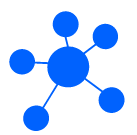

我们的愿景
1+1推广营运与创始生态合伙人
上千家应用生态合伙人
十年内创造和复制不少于10家具有内生动力的生态基地
百万家庭、千万级NAT消费、经营、投资、应用、交易的推广者、经营者、投资者
战略规划
我们的愿景
1+1推广营运与创始生态合伙人
上千家应用生态合伙人
十年内创造和复制不少于10家具有内生动力的生态基地
百万家庭、千万级NAT消费、经营、投资、应用、交易的推广者、经营者、投资者
我们的行动
基金会发行NAT后会立即锚定一家有实力和张力的幸福产业标杆实体企业
企业将可应用、交易不低于50亿美元实物资产作为NAT未来交易和价值的应用的支撑
未来，NAT基金会还将源源不断增加锚定的实体机制以充实NAT内涵价值
NAT Genesis首次分配
私募、基金会、团队、项目预留的所有NAT都实行锁仓线性解锁模式
NAT启动交易、消费、应用后，采用消费及项目部分收益回购双通缩模型
NAT总量通缩到6,193,690,081枚后，将不再通缩，并永久保持此合理数量，以满足应用中的合理的流动性需求，保证NAT在幸福产业中具有较好的含金量
